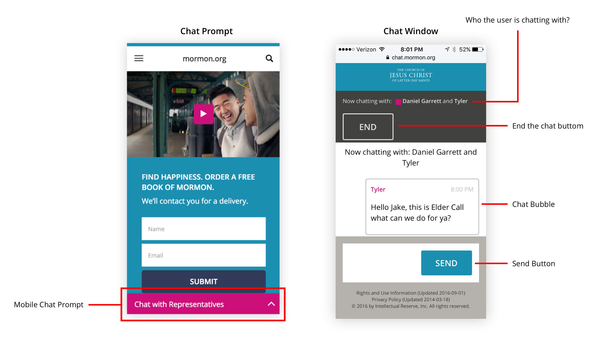

Back to Home
Mormon.org Chat Redesign
Project Scope:
- My Role: UI Design, UX Design
- Tools: Sketch, Invision
- Timeline: March - April 2018
- Deliverables: Sketches, Med-Fi & High-Fi-Mockups, Prototype
- Team: Me, Kedrick Ridges, Spencer Loveless
Context:
Mormon.org is a site produced by the Church of Jesus Christ of Latter-day Saints that promotes and informs online visitors about the values, beliefs, and practices of Mormons. Over 2 million users visit Mormon.org each month.
During my internship at Boncom, I worked on multiple areas of the site including mobile and desktop. Redesigning the chat experience was one of the more impactful projects that I had the opportunity to work on.
The Problems
Issues presented by the client included the following:
- Visitors often end the chat because of delayed response times by missionary representatives (Visitor view)
- Outdated UI design (Visitor & missionary view)
- Visitors don’t trust the chat experience (Visitor view)
The client’s main focus was on improving chat engagement and experience.
Previous Design
The Process
Research
Product Audit:
Before starting to come up with solutions, I wanted explore the product to understand it deeper and see if there were other UI/UX issues. I’ll mention later some issues that I discovered in the “Define” section.
Competitive Analysis:
I started by looking at other chat experiences on mobile & desktop to see what worked and what didn’t. During this review I noticed a couple key features that most had in common:

Most of these chat experiences at one point or another had the following:
- Photos of faces (or illustrations) to help build trust between the visitor and the recipient. People like to talk to people. When the user feels that they are actually communicating with another human (a picture allows this feeling to occur) than the visitor begins to trust in the chat experience.
- Pre-set questions & responses allows the visitor to quickly start a conversation. This also helps new visitors be aware of questions or topics they can discuss in the chat.
Define:
Ideate & Design:
Review & Iterate:
Final Solution:
What I’d do differently?
Looking back on this project, I would have:
- Sold the client on the benefits of UX research to allow our team to validate many of our assumptions.
- Taken more initiative to ensure research was happening throughout the project.
- Questioned the problems that the client presented to us so that I know they are really problems that need to be solved.
My Successes
Although I wasn’t able to see the outcomes of my work, by the end of my internship I felt that this project challenged me to design within set business goals. Below are some LinkedIn recommendations I received at the conclusion of my internship:
Jake is a highly skilled UX designer who thinks through problems thoroughly and offers solutions that are both user-friendly and business-oriented. He is among the quickest workers I have met — capable of cranking out prototypes to illustrate his ideas. Jake’s got a bright future ahead of him.
- Tim Price Ph.D. MBA, UX Strategist @ Boncom
Jake was one of those UX/UI intern prodigies. He is also extremely humble about it. Jake did not require a lot of handholding or catching up. As soon as he started he hit the ground running. Jake very quickly became a valuable asset. He is eager and hungry to learn as much as he can. He is in the know of the latest interaction trends and it is good at creating and maintaining a network. Jake is ahead of the game in more ways than one. I look forward to anyone that gets the privilege of working with him.
- Spencer Loveless, Senior Designer @ Boncom
Lessons Learned:
During this project, I learned:
- In the professional world, no one is going to force you to do research. You have to take the initiative and do the research yourself.
- In the real world, the UX process is not always followed perfectly. You will always find constraints and roadblocks around the corner.
- Just because you are an intern, doesn’t mean you can’t voice your opinion